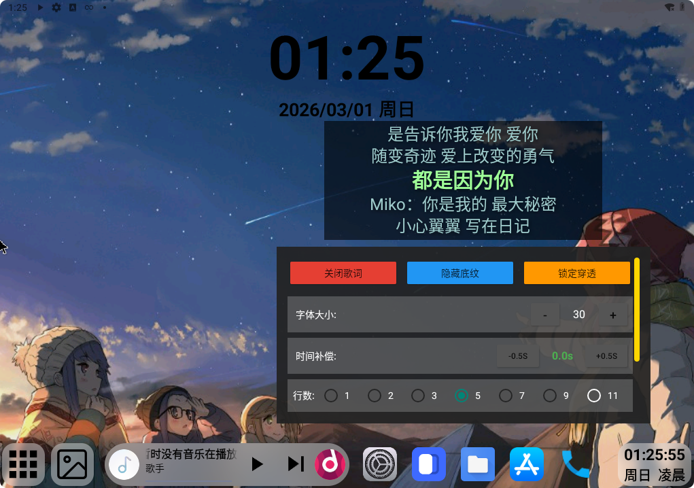

本 app 由零跑车主开发，适用于 21-23 款（其它款没车），旨在使本地歌曲实现悬浮歌词的目标。由于系统只允许 SAF 方式访问 U盘，QQ 音乐无法扫描 U盘歌曲当做本地媒体（除非 Root）。不想买音乐会员，就另起炉灶，既然能 SAF 访问 U盘，那我们就访问里面的歌词呗。这应该是全网第一个不依赖第三方桌面的零跑悬浮歌词插件应用，且免费分享。

监听零听U盘播放曲目（不支持蓝牙与零听酷狗），由于零听不使用安卓的标准媒体通知，只能通过日志反向试出它播放u盘曲目时的media_id，从大量日志中没有找到上报的歌曲进度信息，所以用计时器自己滚动有些bug：拖动进度条歌词不能同步；刚开机或者从其他播放器回切时自动从头开始，但是按暂停或者切歌即刻同步，所以几乎不影响使用。
监听任意第三方播放器（包括视频播放器）发布的标准媒体通知，此场景歌词无进度问题。
v1.1.0以上因为要实现状态栏覆盖，需要保活无障碍权限，保活需ADB提权，否则要每次开机手动授权。若嫌麻烦可食用1.0版本，但是1.0版使用前台服务+通知保活的方式，内存告急可能会杀后台。
无障碍版AMS权限不会被杀后台，此应用常驻后台运存占用小于40M，请放心使用。
采用Context.createDisplayContext建立独立渲染沙盒，主屏与仪表双屏独立控制：主屏与仪表盘拥有完全独立的开关与坐标系统。
本地扫描：基于树形目录遍历索引U盘/内部存储.lrc文件。但是SAF访问方式较慢，刚打开或启动时会显示"无本地歌词"或"暂无歌词"（打开联网），请静待扫描完成。
智能网搜回退：本地无匹配时，自动触发网络引擎（默认对接网易云音乐API），支持精准ID匹配与歌名/歌手模糊搜索。但是模糊搜索匹配的歌词不一定准确，且爬虫不一定稳定，请自行切换URL，建议优先使用本地歌词确保准确有效。
自由配置：通过RGB滑块实现颜色自由定义，加深阴影在复杂背景下仍清晰可见，快捷设置栏实现对行数、位置、时间补偿自由定义。
丝滑上推过渡：打破单行歌词生硬切换的限制，无论1、2、3行，均提供丝滑的300ms属性动画滚动阻尼效果。
开启自启记忆：开机自动沿用上次设置。
其他：使用零听播放时，由于没有歌曲进度信息，监听media_id变化抓不准什么时候会有切歌动作，多时钟异步时序有竞争毛刺，造成切歌时有上一曲歌名残影的现象，已优化但未能完全消除。其他播放器无影响。
参考视频：https://www.douyin.com/video/7611730600667532590
驾驶安全第一：在仪表盘区域显示动态信息可能会分散驾驶注意力。应用内置了自定义坐标系统，请务必将歌词调节至不遮挡时速、限速、导航箭头的边缘安全区域！请规范使用仪表歌词，专注驾驶！
声明：本应用纯属个人技术探索配合Gemini开发，未修改车机任何底层系统文件，不涉及Root破解。由此引发的任何安全或问题由使用者自行承担。
评论